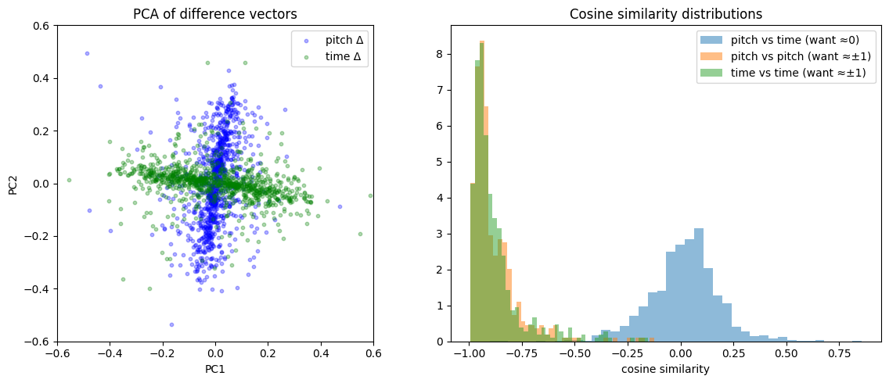
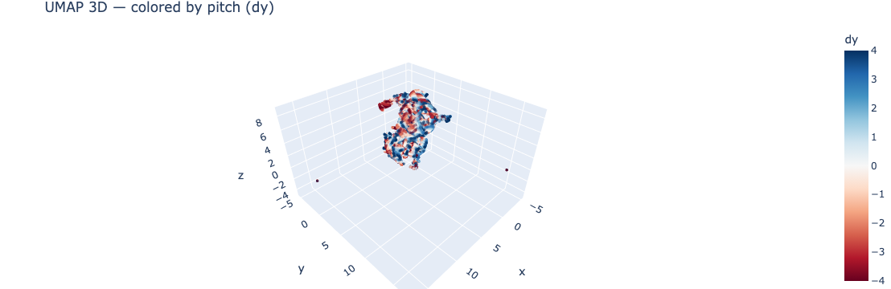

Can a simple encoder learn “soft-separable” pitch vs time directions in latent space? An alternative to explicit factorization.
TL;DR
We use our explicit data augmentation of translations and pitch and time and feed those as labels into a loss function to try and encode those operations geometrically. Add this loss function to an encoder and see if it achieves a soft factorization of pitch and time:
where targets are +1 (same-type, same-sign), −1 (same-type, opposite-sign), or 0 (cross-type):
image.png
(We do not specify these directions. We simply enforce parallel, anti-parallel, or orthogonal, and let the system evolve on its own.)
Spoiler: it works. Since this toy model succeeds, we will have confidence to move on to applying it to the full problem with real MIDI data.
Motivation
Why factorize pitch and time?
Musical motifs exhibit repeated melodic patterns (pitch) and repeated rhythmic patterns (time) that together explain much of the variety within a song. This suggests a natural decomposition of musical representations into a pitch vocabulary and a rhythm vocabulary, where a given motif can be approximated as an interaction (outer product) of pitch and time components. Factored representations are also connected to compositional algebraic properties — the GloVe word vectors (Pennington et al., 2014) demonstrated that vector arithmetic relationships (e.g., king − man + woman ≈ queen) arose from GloVe’s explicitly factorized construction of word co-occurrence matrices.
Why soft factorization?
Prior work in symbolic music analysis has explored both fully factored and fully combined representations. Notably, MelodyGLM (Wu et al., 2023) compared pitch n-grams, rhythm n-grams, and combined n-grams for melody generation. Their ablation study showed that using all three together worked best, but that the combined (non-factored) n-grams carried meaningful information lost by independent factorization. Similarly, Music SketchNet (Chen et al., 2020) and PiRhDy (Liang et al., 2020) construct factored representations by design, which limits the model’s ability to capture pitch–rhythm interactions.
This motivates a middle path: rather than forcing factorization by construction (hard factorization) or hoping to discover it post-hoc (e.g., GANSpace), we use a soft factorization via the loss function. The cosine-similarity loss encourages orthogonality between pitch and time directions in latent space, while still allowing the model freedom to represent non-factored structure. This approach is inspired by the idea—articulated in Albinet (2026)—that competing soft constraints in an objective can give rise to discrete eigenstructure at equilibrium, analogous to how kernel PCA discovers structure through balanced forces rather than hard architectural choices.
Recent theoretical work lends further support to this direction. Shai et al. (2026) show that transformers trained via next-token prediction naturally learn factored representations in orthogonal subspaces when the underlying factors are conditionally independent — and exhibit an inductive bias toward factoring even when strict independence is violated. This suggests that factored structure is not merely a convenient assumption but something models actively prefer, and that nudging them toward it via a soft loss aligns with their natural learning dynamics.
Why blobs?
This toy experiment uses random binary blob images as a stand-in for MIDI piano-roll data. Vertical shifts simulate pitch transposition and horizontal shifts simulate time shifting. These shifts are exact, continuous, and independently controllable—making this domain particularly well-suited for testing whether soft geometric constraints can induce factored latent structure. The real target application is learning factored representations of musical motifs, where the training signal would come from a JEPA-style self-supervised objective augmented with this orthogonality loss.
The Larger Context
I’m building a Representation Autoencoder (RAE, Zheng et al., 2025) for MIDI music based on piano roll representations. I had the idea that some kind of factorization in pitch and time would be useful, but actually prescribing it by construction would probably be detrimental (as the MelodyGLM paper noted). And I love trying to do geometrical operations in latent space, e.g., Operational Latent Spaces (OpLaS, Hawley & Tackett, 2024).
So, after reading Franck’s series on SVD (Abinet, 2026), which includes contact with contrastive losses and soft objectives. This seemed like a natural thing thing to try!
Why a toy model?
I generally like to create toy models when I do anything new because they’re interpretable and you can iterate quickly. If I couldn’t even get the thing to work on this simple system with a small latent space and fake piano rolls, then what hope would I have for doing it in the larger context with the full code and the real data?
import torch, torch.nn as nn, torch.nn.functional as Ffrom torch.utils.data import DataLoaderimport matplotlib.pyplot as plt, numpy as npfrom pathlib import Pathfrom tqdm.auto import trange, tqdmimport matplotlib.pyplot as plttry: import wandb; HAS_WANDB =TrueexceptImportError: HAS_WANDB =Falseprint("HAS_WANDB =",HAS_WANDB)device ='cuda'if torch.cuda.is_available() else'mps'if torch.backends.mps.is_available() else'cpu'print(f"Using {device}")
def shift_no_wrap(x, shifts, dims):"""Drop-in replacement for torch.roll with zero-fill instead of wrap."""if shifts ==0: return x out = torch.roll(x, shifts=shifts, dims=dims) n =abs(shifts)if shifts >0: out.narrow(dims, 0, n).zero_()else: out.narrow(dims, out.size(dims)-n, n).zero_()return out
To make this slightly less of a toy model and more like the full system, we can also turn on the LeJEPA loss (Balestriero & LeCun, 2025), which consists of attracting similar crops(/“views”) and a sigreg loss to prevent collapse.
def safe_mean(t, dim=None): """safe replacement for torch.mean( ). (Don't need it for this NB, but I use it elsewhere in my project.) """return t.mean(dim=dim) if t.numel() >0else0.0def attraction_loss(z1, z2, # embeddings of two "views" of the same thing (in batches) deltas=None, # optional/TBD: info on semantic 'distance' between z1 & z2 tau =100.0): # inverse strength of fall-off for delta distances, big=slower"How we pull similar 'views' together"if deltas isNone: return safe_mean( (z1 - z2).square() ) delta_diag = (deltas**2).sum(dim=1) delta_fac = torch.exp(-delta_diag / tau) # less attraction for more 'distant' views#delta_fac = 1/(1 + delta_diag/tau) # longer tail than expreturn safe_mean( (z1 - z2).square() * delta_fac.unsqueeze(-1) )def SIGReg(x, global_step, num_slices=256):"""SIGReg with Epps-Pulley statistic. x is (N, K) tensor.""" device = x.device g = torch.Generator(device=device).manual_seed(global_step) proj_shape = (x.size(1), num_slices) A = torch.randn(proj_shape, generator=g, device=device) A = A / (A.norm(dim=0, keepdim=True) +1e-10) # normalize columns# Epps-Pulley statistic t = torch.linspace(-5, 5, 17, device=device) # values used in LeJEPA paper, worked for SSLtoy exp_f = torch.exp(-0.5* t**2) # theoretical CF for N(0,1) x_t = (x @ A).unsqueeze(2) * t # (N, M, T) ecf = (torch.exp(1j* x_t).mean(dim=0)).abs() # empirical CF diff = (ecf - exp_f).abs().square().mul(exp_f) # weighted L2 distance#N = x.size(0) # With respect to Yann: Don't scale by N because then if you change the batch size you have to retune lambd by hand ugh T = torch.trapz(diff, t, dim=1).sum() #* N # sum here is over num slices, not data pointsreturn Tdef LeJEPA(z1, z2, global_step, lambd=0.5, deltas=None): "Main LeJEPA loss function" sim = attraction_loss(z1, z2, deltas=deltas) sigreg = SIGReg( torch.cat((z1, z2), dim=0), global_step ) *1# normalize to similar scale as simreturn {'loss': (1-lambd)*sim + lambd*sigreg, 'sim':sim.item(), 'sigreg':sigreg.item()}
wandb: [wandb.login()] Loaded credentials for https://api.wandb.ai from /home/shawley/.netrc.
wandb: Currently logged in as: drscotthawley to https://api.wandb.ai. Use `wandb login --relogin` to force relogin
Tracking run with wandb version 0.24.2
Run data is saved locally in /home/shawley/github/midi-rae/nbs/wandb/run-20260226_231124-frmov01u
---------------------------------------------------------------------------NameError Traceback (most recent call last)
CellIn[13], line 1----> 1@torch.no_grad()
2defcollect_diff_vectors(enc, n=500, sz=16, max_shift=4):
3"""Collect difference vectors, with same-sign and opposite-sign pairs from the SAME base image.""" 4 pitch_same, pitch_opp, time_same, time_opp = [], [], [], []
NameError: name 'torch' is not defined
from sklearn.decomposition import PCAall_diffs = torch.cat([pitch_d, time_d], dim=0).numpy()labels = ['pitch'] *len(pitch_d) + ['time'] *len(time_d)pca = PCA(n_components=2).fit(all_diffs)proj = pca.transform(all_diffs)fig, axes = plt.subplots(1, 2, figsize=(12, 5))# PCA scatter all_diffs = torch.cat([pitch_d, time_d], dim=0).numpy()pca = PCA(n_components=2).fit(all_diffs)proj = pca.transform(all_diffs)n =len(pitch_d)axes[0].scatter(proj[:n, 0], proj[:n, 1], alpha=0.3, s=10, label='pitch Δ', c='blue')axes[0].scatter(proj[n:, 0], proj[n:, 1], alpha=0.3, s=10, label='time Δ', c='green')axes[0].set_xlabel('PC1'); axes[0].set_ylabel('PC2'); axes[0].legend()axes[0].set_title('PCA of difference vectors'); axes[0].set_aspect('equal')# Histogram with all three distributionsax = axes[1]ax.hist(cos_cross, bins=40, alpha=0.5, label='pitch vs time (want ≈0)', density=True)ax.hist(np.concatenate([ps, ts]), bins=40, alpha=0.5, label='same-sign (want ≈+1)', density=True)ax.hist(np.concatenate([po, to_]), bins=40, alpha=0.5, label='opp-sign (want ≈−1)', density=True)ax.set_xlabel('cosine similarity'); ax.legend(); ax.set_title('Cosine similarity distributions')plt.tight_layout(); plt.show()print(f"target=+0: mean cos={cos_cross.mean():.3f}, mean |cos|={np.abs(cos_cross).mean():.3f}")print(f"target=+1: mean cos={np.concatenate([ps,ts]).mean():.3f}, mean |cos|={np.abs(np.concatenate([ps,ts])).mean():.3f}")print(f"target=-1: mean cos={np.concatenate([po,to_]).mean():.3f}, mean |cos|={np.abs(np.concatenate([po,to_])).mean():.3f}")

Mean |cos(pitch,time)|: 0.126 (ideal: 0)
Mean |cos(pitch,pitch)|: 0.883 (ideal: 1)
Mean |cos(time,time)|: 0.878 (ideal: 1)
Results summary
The factorization objective works well. After training for 5,000 steps with batch size 1024 and lr=4e-3:
Cross-type cosine similarity (pitch vs time): mean |cos| = 0.116, tightly clustered around 0 ✅
Same-sign cosine similarity: mean cos = 0.954, sharp peak near +1 ✅
Opposite-sign cosine similarity: mean cos = −0.884, peak near −1 ✅
Positive/negative alignment angles: pitch 162.8°, time 163.2° (ideal: 180°) ✅
The PCA of difference vectors shows a clear cross shape, confirming pitch and time directions are approximately orthogonal in the learned latent space. The remaining ~17° deviation from perfect anti-parallelism is attributable to the asymmetric zero-padding introduced by shift_no_wrap (see probing section below).
Probing the ±1 asymmetry
Both pitch-vs-pitch and time-vs-time cosine distributions show stronger correlation on the +1 side than the −1 side. This is because shift_no_wrap introduces an asymmetry: same-sign shift pairs produce crops with zero-padding on the same side (structurally more similar), while opposite-sign pairs have padding on opposite sides (more visually different). The encoder maps the more-similar same-sign pairs more consistently, yielding a tighter +1 peak and a broader −1 peak.
@torch.no_grad()def collect_signed_diffs(enc, n=500, sz=16, max_shift=4):"""Collect diff vectors split by sign for both pitch and time.""" results = {'pitch_pos': [], 'pitch_neg': [], 'time_pos': [], 'time_neg': []}for _ inrange(n): img = make_blob(sz).unsqueeze(0).to(device) s = torch.randint(1, max_shift+1, (1,)).item() za = enc(img)for dim, name in [(2, 'pitch'), (3, 'time')]:for sign, label in [(1, 'pos'), (-1, 'neg')]: zs = enc(shift_no_wrap(img, shifts=sign*s, dims=dim)) results[f'{name}_{label}'].append((zs - za).squeeze().cpu())return {k: torch.stack(v) for k, v in results.items()}diffs = collect_signed_diffs(enc)for name in ['pitch', 'time']: mean_pos = diffs[f'{name}_pos'].mean(dim=0) mean_neg = diffs[f'{name}_neg'].mean(dim=0) cos = F.cosine_similarity(mean_pos.unsqueeze(0), mean_neg.unsqueeze(0)).item() angle = np.degrees(np.arccos(np.clip(cos, -1, 1)))print(f"{name}: cos(mean_pos, mean_neg) = {cos:.3f}, angle = {angle:.1f}° (ideal: 180°)")
For each blob, we encode a full grid of (dy, dx) shifts and reshape the resulting embedding tensor for SVD. The first singular value dominates (60–80% of total), with rapid dropoff after 2–3 components — consistent with an approximately rank-1 (tensor-product) factorization. This confirms the soft orthogonality loss pushes the representation toward factored structure without enforcing it rigidly.
@torch.no_grad()def grid_embeddings(enc, n_blobs=50, sz=16, max_shift=4):"""Encode a grid of (dy, dx) shifts for each blob.""" shifts =list(range(-max_shift, max_shift+1)) # e.g. -4..+4 = 9 values all_Z = []for _ inrange(n_blobs): img = make_blob(sz).unsqueeze(0).to(device) Z = []for dy in shifts:for dx in shifts: shifted = shift_no_wrap(shift_no_wrap(img, shifts=dy, dims=2), shifts=dx, dims=3) z = enc(shifted).squeeze().cpu() Z.append(z) all_Z.append(torch.stack(Z).reshape(len(shifts), len(shifts), -1))return torch.stack(all_Z), shifts # (n_blobs, n_dy, n_dx, latent_dim)Z, shifts = grid_embeddings(enc)n_dy, n_dx, latent = Z.shape[1], Z.shape[2], Z.shape[3]print(f"Z shape: {Z.shape} (blobs, dy, dx, latent)")# For each blob, reshape to (n_dy, n_dx*latent) and get singular valuesfig, axes = plt.subplots(1, 2, figsize=(12, 4))all_sv = []for i inrange(len(Z)): M = Z[i].reshape(n_dy, n_dx * latent).numpy() sv = np.linalg.svd(M, compute_uv=False) sv_normed = sv / sv.sum() all_sv.append(sv_normed) axes[0].plot(sv_normed, alpha=0.15, color='blue')mean_sv = np.stack(all_sv).mean(0)axes[0].plot(mean_sv, color='red', linewidth=2, label='mean')axes[0].set_xlabel('singular value index'); axes[0].set_ylabel('fraction of total')axes[0].set_title('Singular values: Z reshaped as (pitch, time·latent)')axes[0].legend()# Same but transposed: (n_dx, n_dy*latent)all_sv_t = []for i inrange(len(Z)): M = Z[i].permute(1, 0, 2).reshape(n_dx, n_dy * latent).numpy() sv = np.linalg.svd(M, compute_uv=False) sv_normed = sv / sv.sum() all_sv_t.append(sv_normed) axes[1].plot(sv_normed, alpha=0.15, color='green')mean_sv_t = np.stack(all_sv_t).mean(0)axes[1].plot(mean_sv_t, color='red', linewidth=2, label='mean')axes[1].set_xlabel('singular value index'); axes[1].set_ylabel('fraction of total')axes[1].set_title('Singular values: Z reshaped as (time, pitch·latent)')axes[1].legend()plt.tight_layout(); plt.show()
Z shape: torch.Size([50, 9, 9, 16]) (blobs, dy, dx, latent)
Deeper analysis: Kernel PCA and SVD
The cosine histograms confirm that the soft loss achieves the desired geometric relationships. But does the latent space admit a tensor-product structure — i.e., can embeddings be decomposed into pitch ⊗ time components?
We use two complementary analyses:
Kernel PCA with an RBF kernel (inspired by Albinet’s (2026) connection between soft constraints and eigenstructure via kernel methods). The RBF kernel can reveal nonlinear factored structure that linear PCA would miss. Results show that the first two kernel principal components cleanly separate pitch and time with orthogonal gradients, while kPC3–4 contain no factor-related structure — confirming a 2D factored subspace.
SVD on a grid of shift embeddings: For each blob, we encode a full grid of (pitch, time) shifts and reshape as a matrix. The first singular value captures 60–80% of the total energy, with most of the remainder in just 2–3 components — indicating approximately low-rank (near tensor-product) structure in the learned embeddings.
Using Python 3.10.12 environment at: /home/shawley/envs/midi-rae
Resolved 10 packages in 366ms
Prepared 2 packages in 38ms
Installed 2 packages in 2ms
+ pynndescent==0.6.0
+ umap-learn==0.5.11
Does UMAP Show Us Anything?
If the nonlinear PCA with the RBF kernel is showing a clean separation, does that mean that there’s a two-dimensional subspace manifold at work? Maybe UMAP can discover this manifold and show us something interesting.
Spoiler: No, This is pretty much a jumbled mess because the UMAP focuses on the local structure and twists everything around:
/home/shawley/envs/midi-rae/lib/python3.10/site-packages/umap/umap_.py:1952: UserWarning: n_jobs value 1 overridden to 1 by setting random_state. Use no seed for parallelism.
warn(
What if we went to 3D instead of 2D? Would it let us see more?
/home/shawley/envs/midi-rae/lib/python3.10/site-packages/umap/umap_.py:1952: UserWarning: n_jobs value 1 overridden to 1 by setting random_state. Use no seed for parallelism.
warn(

Discussion
So where are we going with this? The idea that factorization in pitch and time is useful but not the complete picture seems to be borne out and supported by the soft factorization method, which would allow us some level of interpretable controls or structure without forcing it in a detrimental way.
The fact that our augmentation scheme allows us to explicitly label the degree to which we’re Performing the augmentations is a key aspect of this method, i.e., if you were just doing other types of augmentations, you might not be able to pull this off.
I’ll mention that when Christian Steinmetz and I looked at directions for audio effects parameters in latent space (Hawley & Steinmetz, 2023), it was….okay, but ultimately kind of disappointing. Because CLAP embeddings suck. Anyway, this work is kind of on the continuum with that. And the OpLaS paper for letting the latent space encode transformations geometrically.
“Selling Points”: * I like flexibility of the implementation. It doesn’t require any architecture changes at all as it would if you were going to try to do the factorization by construction. You just add it as a loss term. * Furthermore, it’s tunable. You can sort of weight how strongly you want the factorization thing to take hold just by tuning a regularization parameter in the overall loss term. That’s got to be worth some attention from the machine learning community, right? LOL
References
Inspiration: Franck’s series, Soft constraints and kernel methods: - F. Albinet, “(Part 1) SVD Through Variational Principles: From Geometry to the Classical Formulation,” blog post, Jan 20, 2026. https://fr.anckalbi.net/posts/svd-geometry-to-variational/ - F. Albinet, “(Part 2) Ridges and Thalwegs: The Landscape of Competing Forces — PCA through the LS-SVM lens, preparing the path to SVD and beyond,” blog post, Feb. 20, 2026. https://fr.anckalbi.net/posts/ls-svm-kernel-pca/
My Prior Work on Latent Encoding of Data Transformations, Translations, Rotations, Etc: - S.H. Hawley & A. Tackett, “Operational Latent Spaces (OpLaS),” AES International Symposium on AI and the Musician, https://drscotthawley.github.io/oplas/ - S.H. Hawley & C. J. Steinmetz, “Leveraging Neural Representations for Audio Manipulation,” JAES / AES Europe 2023. https://arxiv.org/abs/2304.04394
Factored representations in symbolic music: - X. Wu, Z. Huang, K. Zhang, J. Yu, X. Tan, T. Zhang, Y. Li, Z. Wang, and L. Sun, “MelodyGLM: Multi-task Pre-training for Symbolic Melody Generation,” arXiv:2309.10738, September 2023. - K. Chen, G. Xia, and S. Dubnov, “Music SketchNet: Controllable Music Generation via Factorized Representations of Pitch and Rhythm,” arXiv:2008.01291, 2020. - H. Liang, T. Mu, and R. Cai, “PiRhDy: Learning Pitch-, Rhythm-, and Dynamics-aware Embeddings for Symbolic Music,” arXiv:2010.08091, 2020. - Z. Wang, K. Chen, J. Jiang, Y. Zhang, M. Xu, S. Dai, X. Gu, and G. Xia, “MuseBERT: Pre-training Music Representation for Music Understanding and Controllable Generation,” in Proc. ISMIR, 2021.
Motif discovery and pattern repetition: - D. Meredith, K. Lemström, and G. A. Wiggins, “Algorithms for discovering repeated patterns in multidimensional representations of polyphonic music,” Journal of New Music Research, vol. 31, no. 4, pp. 321–345, 2002. - D. Meredith, “COSIATEC and SIATECCompress: Pattern discovery by geometric compression,” in MIREX, Curitiba, Brazil, 2013. - E. Cambouropoulos, M. Crochemore, C. Iliopoulos, L. Mouchard, and Y. Pinzon, “Algorithms for computing approximate repetitions in musical sequences,” International Journal of Computer Mathematics, vol. 79, no. 11, pp. 1135–1148, 2002. - C.-C. M. Yeh, Y. Zhu, L. Ulanova, N. Begum, Y. Ding, H. A. Dau, D. F. Silva, A. Mueen, and E. Keogh, “Matrix Profile I: All pairs similarity joins for time series,” in Proc. IEEE ICDM, Barcelona, Spain, 2016, pp. 1317–1322. - “SIATEC-C: Computationally Efficient Repeated Pattern Discovery in Polyphonic Music,” in Proc. ISMIR, 2022. https://archives.ismir.net/ismir2022/paper/000006.pdf
Datasets: (The main code so far is only using POP909). - Z. Wang, K. Chen, J. Jiang, Y. Zhang, M. Xu, S. Dai, X. Gu, and G. Xia, “POP909: A Pop-song Dataset for Music Arrangement Generation,” in Proc. 21st International Society for Music Information Retrieval Conference (ISMIR), Montréal, Canada, 2020, pp. 38–45. - “BPS-Motif: A Dataset for Repeated Pattern Discovery of Polyphonic Symbolic Music,” in Proc. ISMIR, 2023. https://archives.ismir.net/ismir2023/paper/000032.pdf
Representation AutoEncoder (RAE) & more: - B. Zheng, N. Ma, S. Tong, and S. Xie, “Diffusion Transformers with Representation Autoencoders,” arXiv:2510.11690, 2025. - K. Didi, “The unification of representation learning and generative modelling,” https://kdidi.netlify.app/blog/ml/2025-12-31-r4g/, Dec 31, 2025.
LeJEPA: - R. Balestriero and Y. LeCun, “LeJEPA: Provable and Scalable Self-Supervised Learning Without the Heuristics”, Nov. 2025, https://arxiv.org/abs/2511.08544
Factored representations in transformers: - A. Shai, L. Amdahl-Culleton, C. L. Christensen, H. R. Bigelow, F. E. Rosas, A. B. Boyd, E. A. Alt, K. J. Ray, and P. M. Riechers, “Transformers learn factored representations,” arXiv:2602.02385, February 2026.
Factored word embeddings: - J. Pennington, R. Socher, and C. D. Manning, “GloVe: Global Vectors for Word Representation,” in Proc. EMNLP, 2014, pp. 1532–1543. https://nlp.stanford.edu/pubs/glove.pdf
Disentangled and geometric representations: - E. Härkönen, A. Hertzmann, J. Lehtinen, and S. Paris, “GANSpace: Discovering Interpretable GAN Controls,” in Proc. NeurIPS, 2020. - I. Higgins et al., “beta-VAE: Learning Basic Visual Concepts with a Constrained Variational Framework,” in Proc. ICLR, 2017. - G. Velarde, D. Meredith, and T. Weyde, “A wavelet-based approach to pattern discovery in melodies,” Springer Cham, 2016, pp. 303–333.